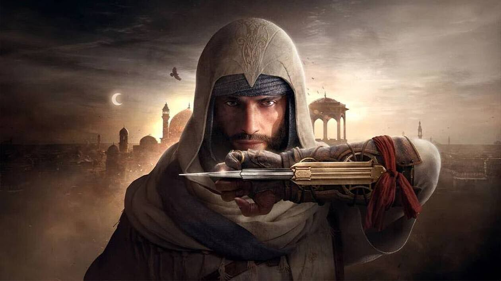
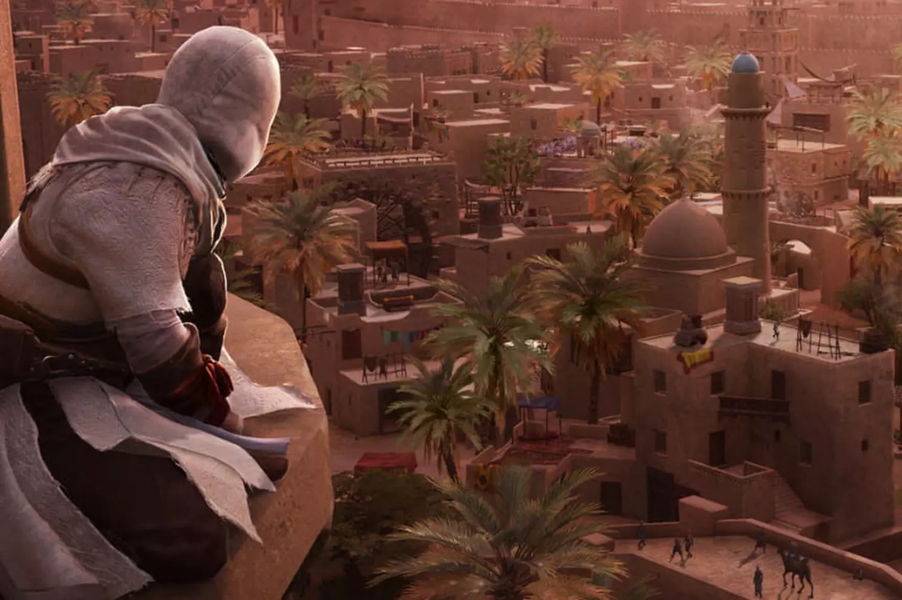

🌆 Retour aux origines
La partie gameplay est revenu aux bases des premiers opus.Le parcour est très fluide malgré quelque petits bugs,nous ne pouvons plus nous accrocher à tous les endroits que nous voulons comme les premiers jeux.Il y a beaucoup de possibilités de parcours dans les rues de bagdad Nous pouvons rester sur les toits pendant très longtemps.L'infiltration est vraiment mise en avant dans ce jeu. C'est pratiquement impossible de survivre face à beaucoup d'ennemis,l'infiltration est la clé pour les missions.Nous disposons de 5 outils que nous pouvons améliorer.Le système de combat reste assez basique pas grand chose à dire la dessus.Dans le jeu,nous avons un système de notoriété qui augmentent à mesure que nous commettons un crime en public.Si vous arrivez au niveau maximale de votre notoriété,un ninja viendra vous cherchez.Il est très fort. Assassin's Creed Mirage ramène la saga à ses racines : infiltration, parkour, et assassinats ciblés. Incarnez Basim, un voleur de rue devenu Assassin, dans le cadre mystérieux et vibrant de Bagdad au IXe siècle.

🔥 Points positifs
- Gameplay centré sur la furtivité et l’assassinat
- Ville peuplée et dynamique
- Rites orientales recrées avec succès
- Une fin surprenante
❌ Points négatifs
- Trop de bugs (bugs de parcour,de cinématique...)
- Les expressions faciales.
- Les quêtes secondaires.
- Une IA peu réactive(repérage en infiltration).
🕵️ Notre avis
Mirage a réussi son pari sur le fait de revenir aux sources des premiers opus mais le jeu contient beaucoup de bugs. Malgré cela nous avons adoré le jeu, l'évolution de Basim un voleur des rues qui devient une figure de la confrérie des assassins.
✍️ Notre note
🌟🌟🌟🌟☆